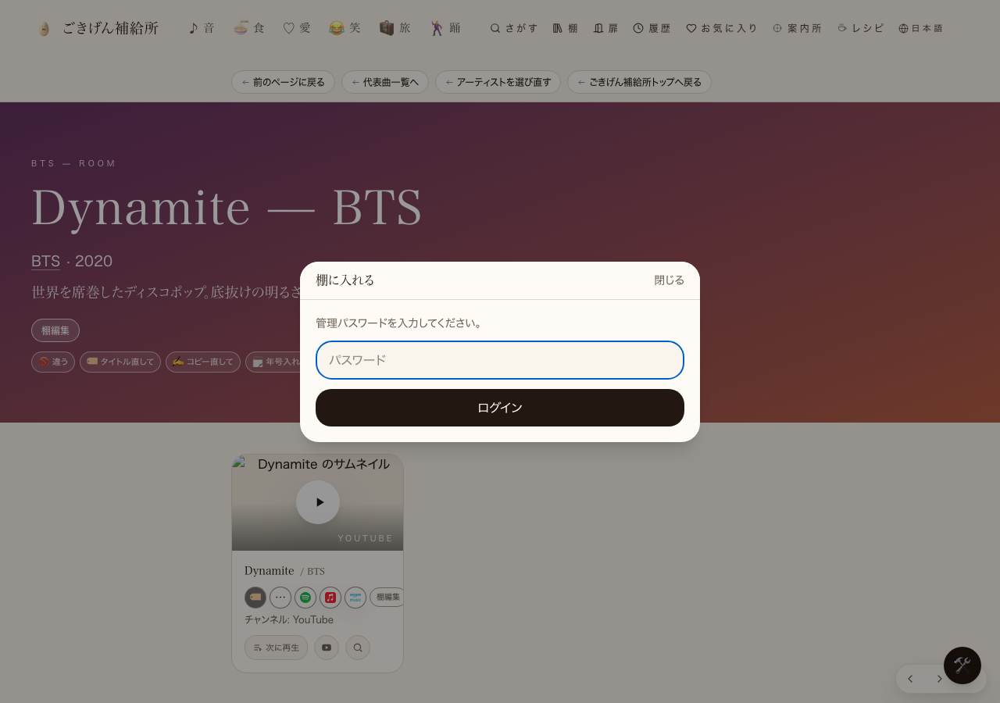

共有資料の一覧
／ 確認ページ #45 棚編集：メインを2枠にする（2番に入れる・入れ替え・関連から外す）
#45 棚編集：メインを2枠にする（2番に入れる・入れ替え・関連から外す）
2026-09-06 実装・main合流・本番(GitHub Pages)反映まで実測確認
曲ページの編集パネルに『2番に入れる』ボタンと『⇅ 1番と2番を入れ替える』ボタンを新設。大きい2枠目（1番の直下）へ好きな動画を上書きせずに足せるようになった。『✕ 関連から外す』は既存機能で対応済み。
② 数字
true
本番の実配信コードに『2番に入れる』の文字列あり
true
本番の実配信コードに『1番と2番を入れ替える』の文字列あり
psr2.76df587
公開後のx-deployment-id（公開前:psr2.ac439e3から変化）
③ 前と後（実データでのスクリーンショット）
本番のBTS「Dynamite」ページに ?admin=1 で編集面を開いた実物（🛠→『棚に入れる』クリック直後）。ここから先は管理パスワードが必要で、入力操作はAI側の一線（パスワード入力）のため行っていない。『2番に入れる』『⇅入れ替え』ボタン自体は、パスワード入力後に開くSongEditInline内にあり、実配信コード中への存在は上の数字で確認済み。

④ 押せるリンク
確認する曲ページ（BTS「Dynamite」）
https://joy-relief-station.lovable.app/cover-guide?artist=bts&song=dynamite
本番の実配信コード（AdminShelfPanelバンドル。文言を検索可能）
https://joy-relief-station.lovable.app/assets/AdminShelfPanel-D2KaSf51.js